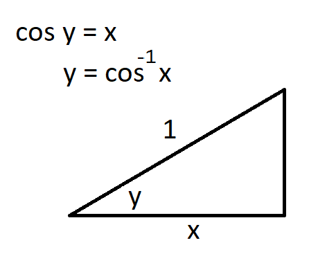

Find the inverses of the following functions:
Recall that to find the inverse of a function \( y = f(x) \), we swap \(x\) and \(y\) and solve for \(y\).
Let's take a closer look at \(l(x)\). Sketch it and its inverse on one set of axes. What do you notice?
Definition:A function, \(f\), is one-to-one iff \(x_1 \neq x_2 \Rightarrow f(x_1) \neq f(x_2)\), i.e. different inputs give different outputs.
The graph of a function must pass the vertical line test if it is truly a function. For a function to be 1-1, it must pass a horizontal line test. Explain why this must be true.
Consider \(f(x) = 2x + 3\). Find its inverse and graph both on the same set of axes.
What do you notice about the derivatives of these functions?
Theorem Let \(f\) and \(g\) be inverses of each other. Let \(f(a) = b\). If \(f'(a)\) exists and \(f'(a) \neq 0\). Then \(g'(b)\) exists and \(g'(b) = \frac{1}{f'(a)}\).
Consider \(j(x) = (x-3)^3\). What is \(\frac{d}{dx}j^{-1}\) at \(x=8\)?
Find the following values:
Sketch the functions \(\tan(x)\) and \(tan^{-1}(x)\) on the same set of axes. Make note of any interesting observations.
Question: Sketch a plot of the cosine function. Does this function have an inverse? Why or why not?
Task: use the picture below along with the theorem above derivatives of inverses to show \(\frac{d}{dx}\cos^{-1}x = \frac{-1}{\sqrt{1-x^2}}\).

Can you repeat this style of analysis to derive the derivative of inverse sine?
What about the derivative of inverse tangent?